Über mich
Kreativ. Neugierig. Zielstrebig.
Ich studiere Mediendesign und beschäftige mich besonders mit UX/UI-Design, Webdesign, visueller Kommunikation, Bewegtbild, Branding und kreativen Konzepten.
Meine Schwerpunkte

UX/UI-Design

Webdesign
Visuelle Kommunikation
Bewegtbild

Branding

Kreative Konzepte
Meine Skills
Office
Microsoft Word, Excel und PowerPoint
UX/UI & Web
Figma und grundlegende Webentwicklung
3D & Kreativsoftware
Blender
Design & Grafik
Adobe Photoshop, Illustrator, InDesign, Canva und Procreate
Foto & Video
Adobe Lightroom, CapCut und weitere Videotools
KI-Tools
ChatGPT, Microsoft Copilot, Gemini und weitere KI-Werkzeuge